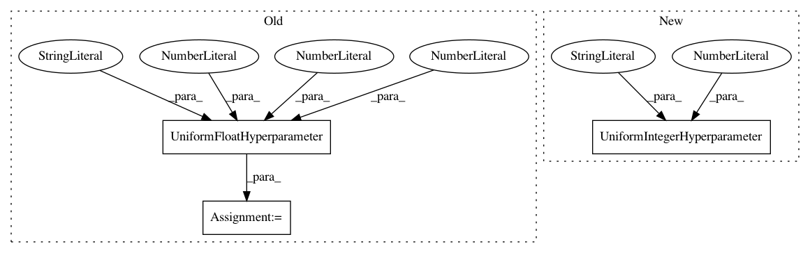

84ac1e439158fed286a8b6ef8de3ae8826575f85,autosklearn/pipeline/components/regression/gradient_boosting.py,GradientBoosting,get_hyperparameter_search_space,#Any#,123
Before Change
name="max_leaf_nodes", value="None")
min_impurity_decrease = UnParametrizedHyperparameter(
name="min_impurity_decrease", value=0.0)
alpha = UniformFloatHyperparameter(
"alpha", lower=0.75, upper=0.99, default_value=0.9)
cs.add_hyperparameters([loss, learning_rate, n_estimators, max_depth,
min_samples_split, min_samples_leaf,
min_weight_fraction_leaf, subsample, max_features,
After Change
name="min_samples_leaf", lower=1, upper=200, default_value=20, log=True)
max_depth = UnParametrizedHyperparameter(
name="max_depth", value="None")
max_leaf_nodes = UniformIntegerHyperparameter(
name="max_leaf_nodes", lower=3, upper=2047, default_value=31, log=True)
max_bins = Constant("max_bins", 256)
l2_regularization = UniformFloatHyperparameter(
name="l2_regularization", lower=1E-10, upper=1, default_value=1E-10, log=True)
early_stop = CategoricalHyperparameter(
In pattern: SUPERPATTERN
Frequency: 3
Non-data size: 3
Instances
Project Name: automl/auto-sklearn
Commit Name: 84ac1e439158fed286a8b6ef8de3ae8826575f85
Time: 2019-08-05
Author: guilherme.miotto@gmail.com
File Name: autosklearn/pipeline/components/regression/gradient_boosting.py
Class Name: GradientBoosting
Method Name: get_hyperparameter_search_space
Project Name: automl/SMAC3
Commit Name: 83f8551487ec8e64f6110cc1ec24142fc2c42149
Time: 2017-03-17
Author: joshua.marben@neptun.uni-freiburg.de
File Name: examples/rf.py
Class Name:
Method Name:
Project Name: automl/auto-sklearn
Commit Name: 84ac1e439158fed286a8b6ef8de3ae8826575f85
Time: 2019-08-05
Author: guilherme.miotto@gmail.com
File Name: autosklearn/pipeline/components/classification/gradient_boosting.py
Class Name: GradientBoostingClassifier
Method Name: get_hyperparameter_search_space